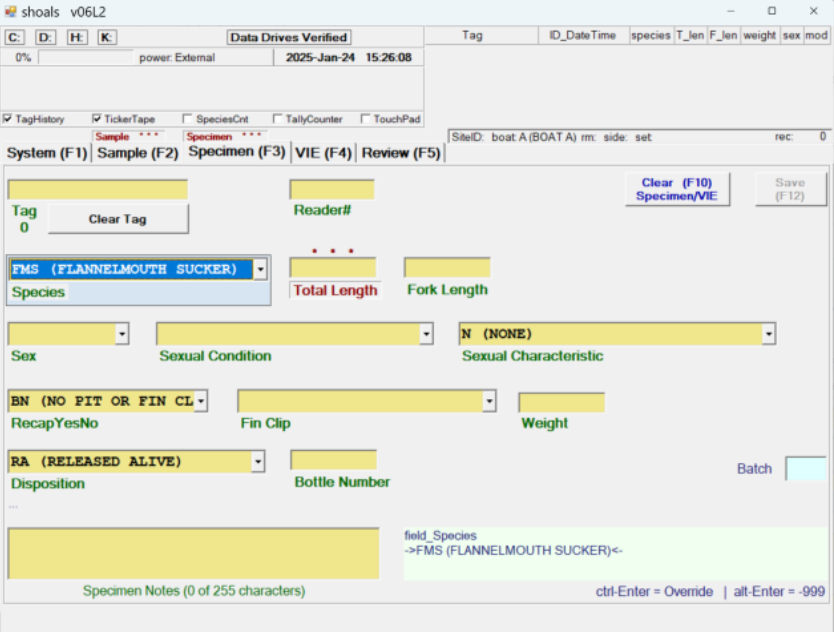

Project
High-Level Requirements
CRAB CAKES v2 will improve Bluetooth PIT-tag scanner connectivity, support Windows and Linux, and provide a more user-friendly interface for field biologists. The application must also support offline data collection, local backups, and data export.
Additional requirements include PIT-tag history lookup with warnings for unusual measurements or species mismatches, as well as QA/QC tools for reviewing fish data through graphs, filters, summaries, and pivot tables. Survey data should be exportable as CSV or tab-delimited files for use in existing research databases.
Envisioned Solution
PIT Crew is building on the existing CRAB CAKES application to create a more reliable replacement for SHOALS. The goal is to give field biologists a single desktop application where they can collect, review, and manage fish survey data without needing an internet connection.
Our current development includes QA/QC prototypes that display fish records from a local SQLite database through length-versus-weight graphs, species counts, customizable graphs, pivot tables, and summaries. We are also working toward improved scanner integration, PIT-tag history features, and compatibility across supported operating systems.

CRAB CAKES
CRAB CAKES, or the Colorado River Area Biologists Computer-Aided Knowledge Entry System, is the desktop application being developed to replace Shoals. Development began with a previous NAU Capstone team, SharkBytes, which created the first version of the new system and completed several important parts of the application. However, the program is not yet reliable enough for regular field use.
PIT Crew is continuing that work by focusing on the parts of the program that still need improvement. These include making Bluetooth connections with PIT-tag scanners more reliable, improving the interface, and adding access to information about previously tagged fish. The project also includes adding simple graphs and summaries for QA/QC in the field and expanding compatibility to Linux so the program can be used on a wider range of computers.

Why It Matters
Fish monitoring is about more than keeping records. Changes in fish populations can help show what is happening in the Colorado River and provide information that supports conservation efforts. This is especially important for species like the humpback chub, which is threatened by habitat changes and invasive species.
With data being collected from roughly 150,000–200,000 fish each year, even small problems with data entry can add up quickly. CRAB CAKES will help crews catch unusual values, review information about previously tagged fish, and check their data while they are still in the field. A reliable replacement for Shoals would make fish survey data easier to collect and review while giving biologists a system that can continue to be updated as their work and equipment change.
The program also needs to be practical for field crews with different levels of technical experience. Tasks like connecting a scanner, entering fish information, reviewing records, and backing up data should be easy to use without requiring programming knowledge.
High-Level Requirements
Major requirements for this application includes but is not limited to; fixing bluetooth scanner connectivity, improving the pre-existing programs GUI, adding support for Linux systems, adding graphs to visualize fish data and trends, and making the fish records more user-friendly.
Envisioned Solution
Despite there being a pre-existing application for our clients to use, our goal is to make it more user-friendly for them as well as ensure its ease of use. As of right now, the biggest issues arise from the application appearance as well as its lack of response to the bluetooth pit devices that are necessary on-field. (To be continued as project progresses…)